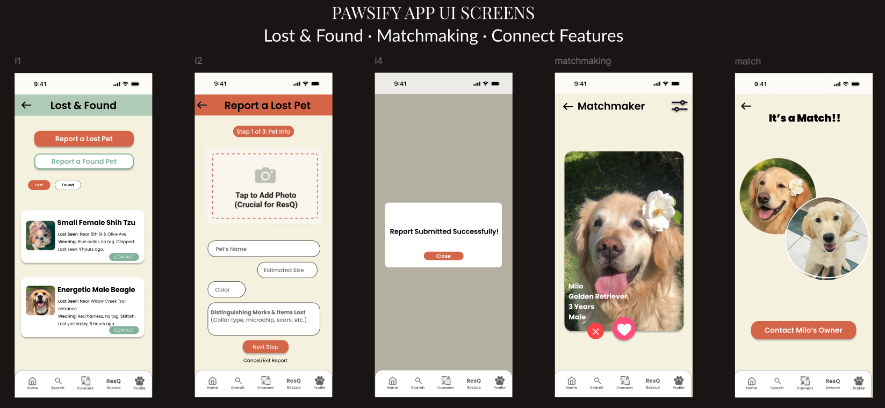
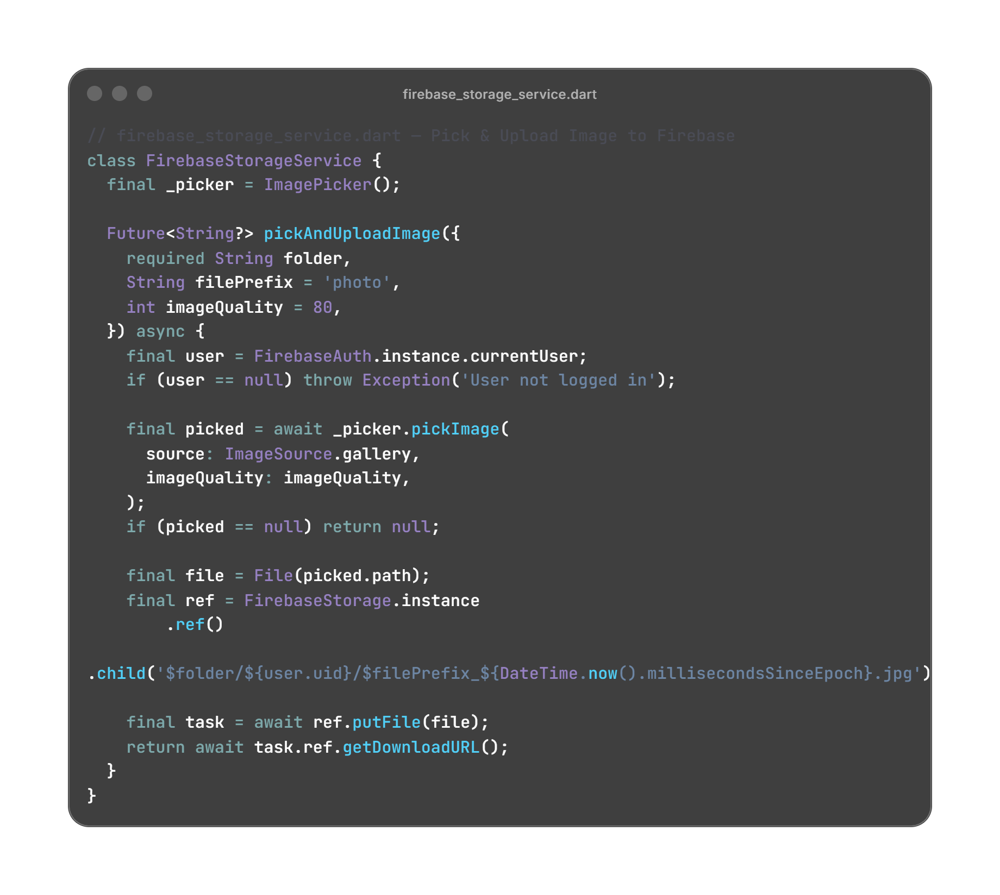
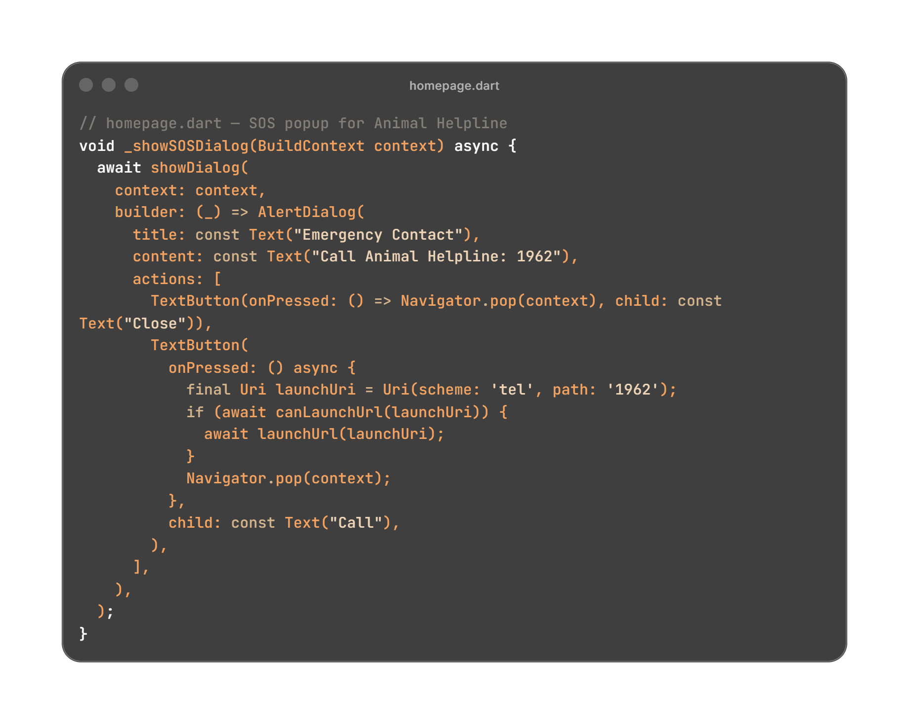

Overview
Pawsify is a mobile app designed to make pet care, rescue coordination, and community interaction simpler and more meaningful. It allows dog owners to create profiles, track vaccinations and deworming, and connect with other pet parents or foster homes. The app also features rescue listings, adoption channels, and donation tracking.
Problem
Pet owners and rescue organizations lacked a unified, organized space for communication and tracking. Existing platforms were scattered — some for adoption, some for community, and others for tracking — making it hard to manage everything in one place.
Solution
I conceptualized and built Pawsify — a cross-platform Flutter app that combines these features in a single intuitive experience. Users can manage dog health data, find playdates, coordinate rescues, and follow adoption stories — all in one cohesive interface.
My Role & Process
- Originated the concept and led a 4-member team as project lead.
- Designed the full UI in Figma, including logo, color palette, and app flow.
- Handled Firebase setup (Firestore, Authentication, and Storage).
- Directed backend integration and ensured all features followed the same design consistency.
- Managed team coordination and deadlines, stepping in to handle unfinished development parts.
UI Showcase
The Pawsify app’s UI blends warmth and clarity — using soft neutrals, intuitive layouts, and familiar navigation to make connecting with other dog owners and rescue groups effortless.
Lost & Found · Matchmaking · Connect Features
Code Highlights
Below are three key snippets from Pawsify that demonstrate backend integration, structured data modeling, and feature logic. Each showcases a core piece of the app’s functionality — from image uploads to Firestore models and real-world emergency handling.
Firebase Upload Function
This function enables users to pick images from their gallery and upload them securely to Firebase Storage under their authenticated user ID.
Structuring Donations in Firestore
The Donation model defines how Firestore data is mapped to the app — ensuring consistent, safe handling of user donations, timestamps, and identifiers.
Emergency SOS Dialog
This feature gives users instant access to the national Animal Helpline (1962) via an alert dialog and phone launcher, reflecting Pawsify’s focus on real-world pet safety.
Challenges & Learnings
Balancing leadership and implementation was challenging — I had to guide team members while completing core development myself. I also learned to translate my design vision into real, scalable Flutter components, handle async Firebase data efficiently, and collaborate across different skill levels.
This project taught me to think like a full product owner — from ideation to deployment — combining empathy, design, and development seamlessly.